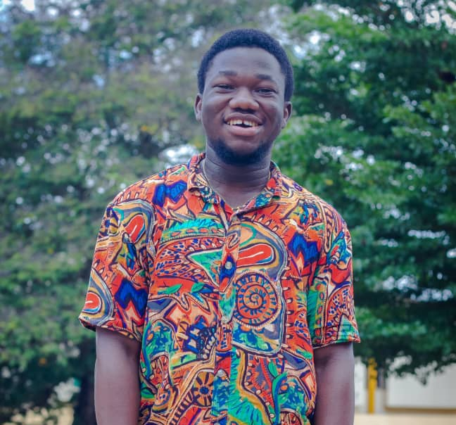
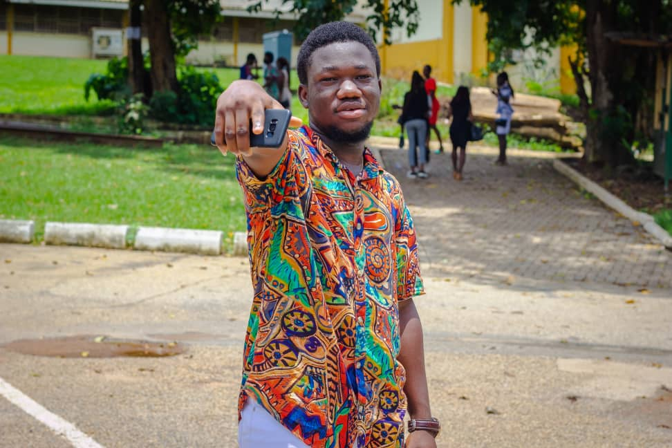
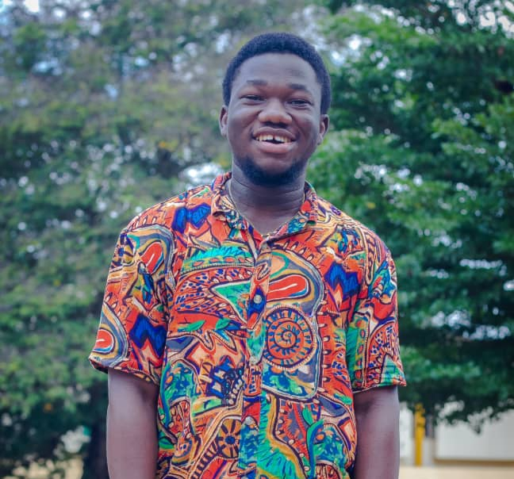
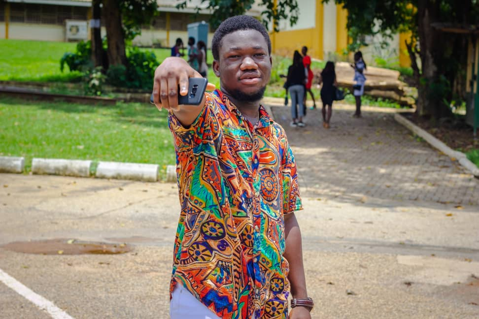

This is Gborsi Maxwell Mawunyo
- A first year Mathematical Sciences student aiming to achieve the award of Bachelor of Science degree in Computer Science at the end of my four year stay in the permier university, University of Ghana, Legon.
- I would like to pursue Computer science at the next stage of my studies. That is, Level 200 - Level 400
- I am 21 years of age at the moment.
- Attented St.Peter Clever school for my Creche and Nursery foundation, then headed to Queen of Peace Catholic School for my basic and junior high education. Both schools situated in Madina, Accra.
- Presbyterian Boys' Senior High School, Legon is where I attained my secondary education, where I passed my WASSCE examination and gaining admission to the University of Ghana.
- I am currently non-resident staying at Kwabenya.
- Bonus fact about me; I support Chelsea Football Club. The best obviously, if you enjoy winning.
Below are some pictures of me;
 


